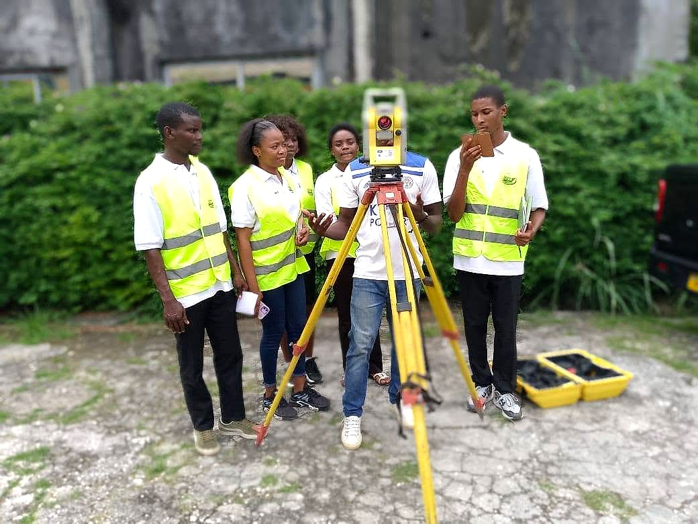

Accueil / Formations
9 licences professionnelles, 8 masters professionnels et 1 master pour cadres : des parcours pensés avec les professionnels du secteur.
Accessible après le Baccalauréat. Parcours en 3 ans (système LMD) avec stage professionnel et rapport de fin d'études.
Accessible avec une Licence (Bac+3). Deux années d'approfondissement, de management et de spécialisation, avec mémoire professionnel.
Pour les professionnels en activité souhaitant se spécialiser en Expertise Maritime, avec un rythme adapté.
Contrôle continu (40 %) et examen (60 %). Notes et bulletins consultables en ligne dans l'espace étudiant.
Notre équipe vous accompagne dans votre choix d'orientation.